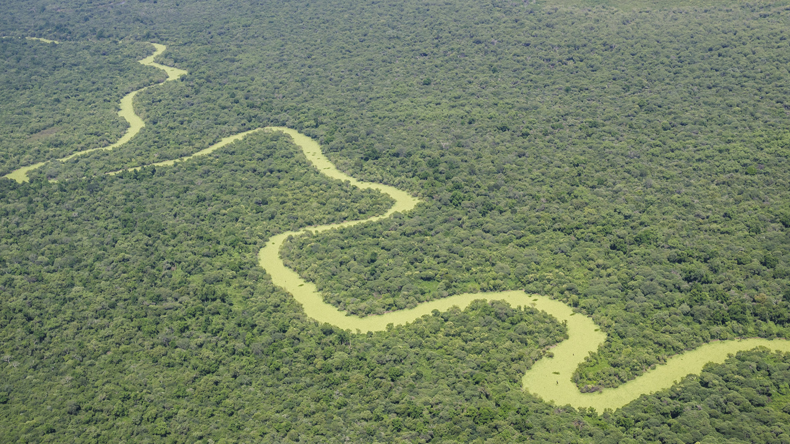
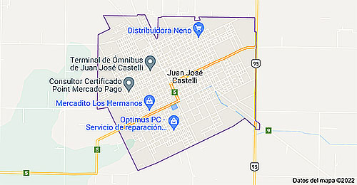

FUNDACIÓN AMIGOS DEL ARTE Y TURISMO Juan José Castelli, coloquialmente Castelli, es una ciudad ubicada en el noroeste de la provincia del Chaco, Argentina. Es la cabecera del departamento General Güemes. Ubicada a pocos kilómetros de la ciudad de Presidencia Roque Sáenz Peña, sobre la ruta nacional 95, fue considerada durante muchos años como el " Portal del Impenetrable". 
La Fundación Amigos del Arte y Turismo, con Personería Jurídica Nº452/14 es una Entidad no lucrativa, con el fin de vincular las expresiones culturales de la región, la idiosincrasia de la gente y el turismo a través del ARTE.  Mapa : J.J.Castelli Figura : Bandera de J.J.Castelli - Chaco Geográficamente ubicados en el Departamento General Güemes de la provincia del Chaco, en la Puerta del Impenetrable, con una comunidad integrada por pueblos originarios de distintas etnias, criollos y descendientes de inmigrantes de distintos países de Europa.
|
||